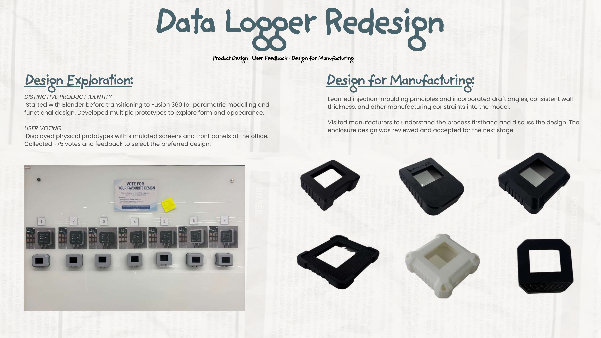
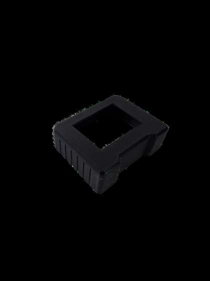
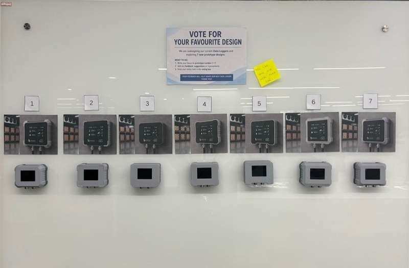
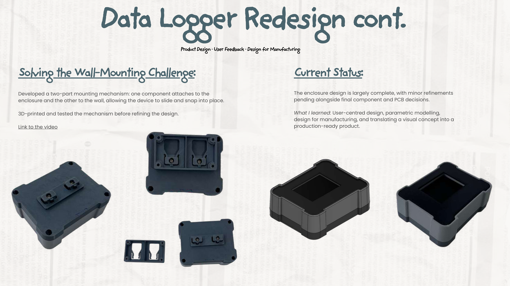
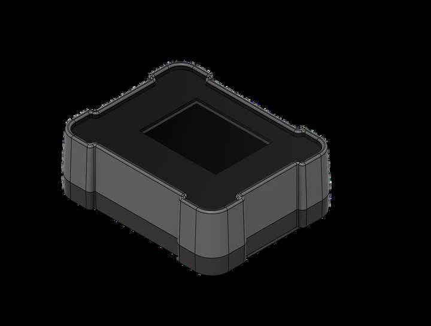
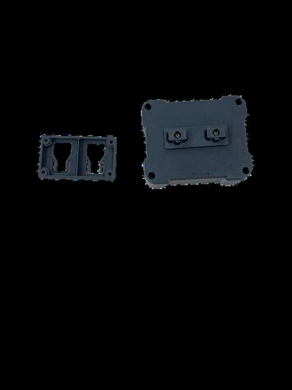

DATA LOGGER REDESIGN
Translating a visual concept into a production-ready product through user testing, parametric modelling, and Design for Manufacturing.

THE PROCESS & RESEARCH
Started with Blender to explore aesthetic form and visual balance before transitioning to Autodesk Fusion 360 for parametric engineering. To ground the redesign in real user preference, physical mockups with simulated screens and front panels were placed on display at the office, gathering ~75 votes and actionable feedback.
ACTUAL USER VOTING & PARAMETRIC CAD


SOLVING THE WALL-MOUNTING CHALLENGE



ENGINEERING & DFM HIGHLIGHTS
01. INJECTION-MOULDING CONSTRAINTS
Incorporated draft angles across all vertical faces, maintained consistent wall thickness to prevent sink marks, and added strategic ribbing for structural rigidity.
02. FACTORY VISITS & REVIEW
Visited tooling manufacturers to review gating, parting lines, and ejection points. The enclosure design was reviewed, approved, and accepted for the production pipeline.
03. TWO-PART WALL SLIDE & SNAP
One part fastens to the wall surface, while the mating bracket is integrated into the rear housing. The device slides smoothly and locks with an audible, secure tactile snap.
The enclosure design is largely complete, with minor refinements pending alongside final component and PCB decisions.
"What I learned: User-centred design, parametric modelling, design for manufacturing, and translating a visual concept into a production-ready product."